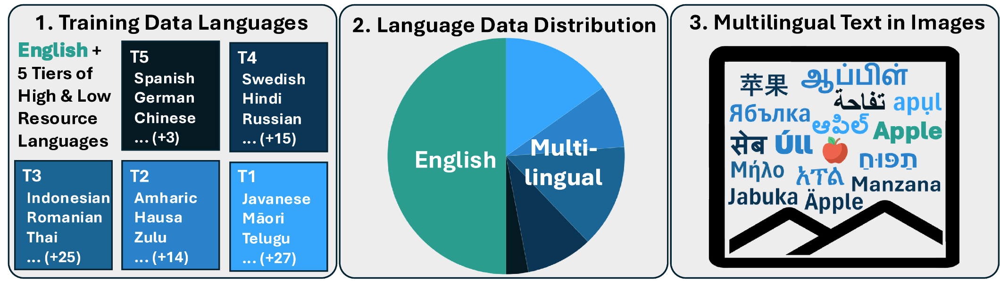
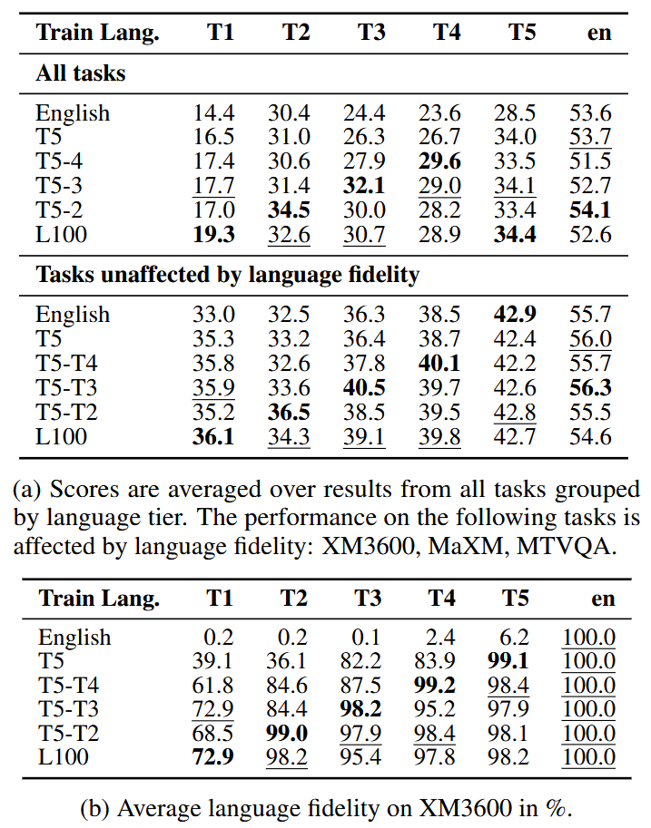
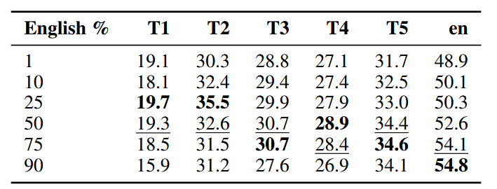
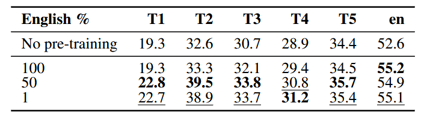
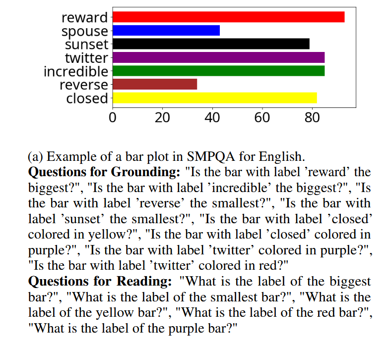
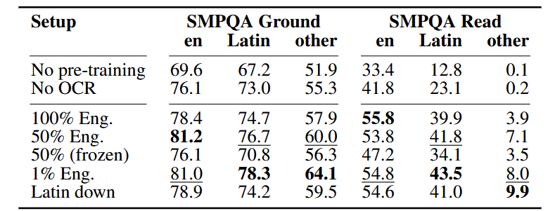
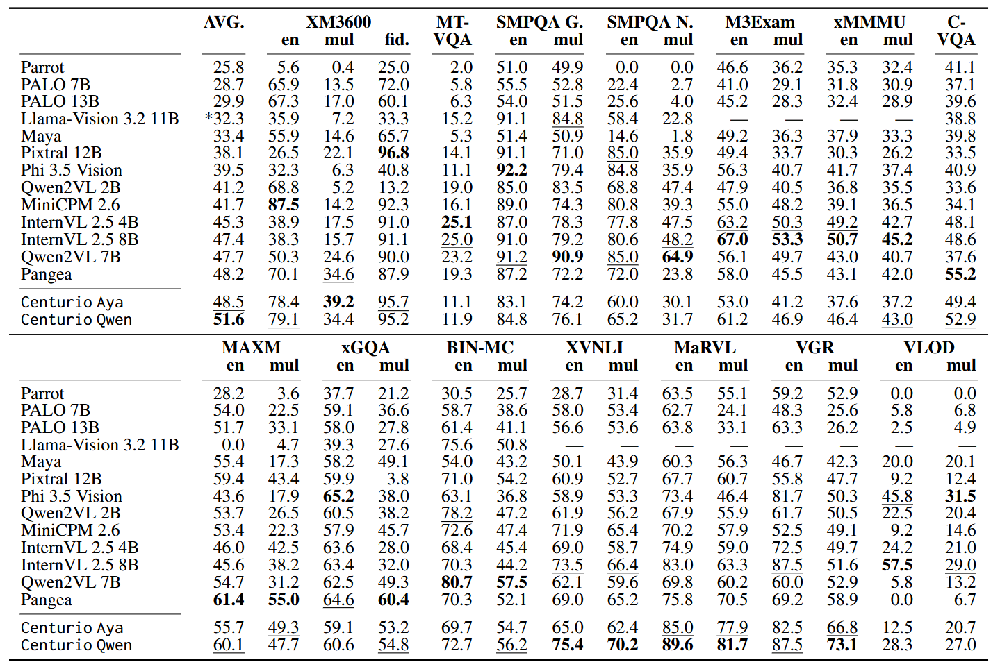

Centurio: On Drivers of Multilingual Ability of Large Vision-Language Model
Training Language Composition: We explore with how many languages and with how much multilingual data to train to balance multilingual and English performance.
Multilingual OCR: We explore how to best boost multilingual OCR capabilities and present a new evaluation dataset (SMPQA).
Centurio Qwen & Aya: We train strong large vision-language models with 100 languages using our lessons learned.
*Equal ContributionsCorresponding to: (gregor.geigle|florian.schneider-1) [at] uni-(wuerzburg|hamburg).de
Multilingual large vision-language model (LVLM) should be able to understand inputs in different languages - both in the text and image modality - while generating output in different languages.
To achieve this, training with multilingual and not just English data is necessary.
However, prior work used largely ad-hoc choices for their training data language composition with no deeper insight into their choices.
In this work, we comprehensively analyze how to best compose the data for training, as illustrated in Figure 1.
Finally, using the lessons learned, we then train and release Centurio Qwen & Aya, two strong multilingual LVLMs with state-of-the-art performance over 14 tasks against other open-weight models.

Figure 1: Our exploration of drivers for multilingual abilities: (1) how many languages? (2) how much multilingual? (3) multilingual OCR?
We summarize now our key findings. For a more detailed discussion, consider reading the paper.
We focus on four research questions, each building on the previous one, designed to identify an optimal multilingual training mix:
RQ1: What is the optimal number of training languages?
RQ2 & RQ3: What is the optimal distribution of data across languages in (RQ3) pre-training data and (RQ2) instruction-tuning?
RQ4: How to improve the understanding of multilingual text in images?
Experimental Setup
Architecture: LLaVA-like architecture (MLP projects tokens of image encoder (SigLIP) into LLM embedding space).
We train only the MLP and the LLM (using LoRA) and keep the image encoder frozen.
Training Data:Instruct-tuning: mix of tasks based on LLaVA-Next. Pre-training: ShareGPT-4V dense captions.
English data is machine-translated (MT) with NLLB to obtain multilingual training data.
Evaluation : 13 tasks covering 43 languages.
We group & average results over all tasks by resource tiers of languages (from T5 = high resource to T1 = low resource) using taxonomy of
We report the results of models trained with Phi 3.5 as LLM backbone but repeated experiments with Llama 3 showed similar trends, suggesting that these are not LLM-specific results.
RQ1: Number of Training Languages
We first investigate on how many languages to actually train with: does training on few high-resource languages and (zero-shot) cross-lingual transfer to unseen languages suffice, or do we need to explicitly include each targeted languages?
Conversely, does training with more languages harm the per-language performance, with a smaller portion of the training data now allocated to each language?
Setup: We train models with the instruct-tuning data, keeping 50% English and translating the rest uniformly over N languages.
We gradually increase N, starting with the highest-resource tier (T5) and then including tiers of lower-resource languages (T4 to T1), one at a time.
This results in the following setups:
T5: (N=6),
T5-T4: (N=24),
T5-T3: (N=52),
T5-T2: (N=69), and finally
L100 (N=99).
For L100, we "fill up" the languages from T5-T2 with languages from T1 until we have N=99.
Results:
We find that including more languages is generally beneficial for languages now included while only causing small performance degradations (if at all) for languages that were included before.
Language Fidelity:
While we see improvements over all tasks, including more languages is particularly important for generative tasks (like image captioning or open VQA), where the model has to produce output in the target languages (=language fidelity).

Figure 2: Results of experiments for RQ1 of models trained trained with different instruct-tuning language mixes that include from 7 to 100 languages.
Takeaway:
We see major benefits for mid- to low-resource languages when training with 100 languages and find only minimal negative effects for high-resource languages.
Hence, we use the L100 setup in subsequent experiments.
RQ2: Language Distribution in Instruction-Tuning
We now analyze how much of the training data should be multilingual.
On the one hand, intuitively, increasing the non-English portion of the training data budget could then lead to further gains.
On the other hand, the gains from more multilingual training are, at some point, likely to be offset by the fact that we are adding noisy (MT-obtained) data at the expense of clean (English) data.
Setup:
As in RQ1, we train the model with the instruct-tuning data (L100 setup).
We vary now just the amount of data that is kept in English (while the rest is translated to the other languages).
We consider 1%, 10%, 25%, 50%, 75%, and 90% English data.
Results:
The peak performance for all tasks and language tiers is achieved with 25-75% English.
Some tasks benefit from more multilingual data, and vice versa, some tasks benefit from more data kept in English.
However, the extremes with mostly English (90%) or mostly multilingual (1-10% English) data are, in general, not ideal.

Figure 3: Results of experiments for RQ2 of models trained with different instruct-tuning language mixes (100 languages but different ratio of English to others).
Takeaway:
In practice, training with 25% to 50% multilingual data seems to yield strong (or even the best) results while keeping translation efforts low.
We use 50% English in subsequent experiments because it produced the overall most balanced results.
RQ3: Language Distribution in Pre-Training
Pre-training with image-caption pairs improves LVLM performance.
We therefore, after identifying an effective distribution of instruction-tuning data, next explore the effect of different distributions of pre-training data across languages.
Specifically, we test if balancing out the English and multilingual portions delivers better performance than unbalanced distributions, that assign more training budget to English or the multilingual mix, respectively.
Setup:
We fix the instruction-tuning mix for all models (L100, 50% English) and only change the pre-training data.
Here, we consider keeping 1%, 50%, and 100% of the data in English and translating the rest to the remaining 99 languages.
Results:
English-only pre-training primarily helps in English though there is at least no negative effect for other languages.
Multilingual pre-training can greatly improve the model performance even in English.
This still hold for the highly multilingual mix with just 1% English.
Nevertheless, the benefits with 99% multilingual are minimal compared to 50%.

Figure 4: Results of experiments for RQ3 of models trained with different pre-training language mixes (100 languages but different ratio of English to others) and identical instruct-tuning data.
Takeaway:
Multilingual pre-training can greatly improve performance.
In practice, benefits seem to saturate after 50% multilingual data, so we use this setup in subsequent experiments to keep translation efforts lower.
RQ4: Improving on Multilingual Text-in-Image Tasks
Finally, we focus on the models' multilingual understanding of text in images and how to improve it.
Unlike tasks based on natural images, text-in-image tasks cannot be translated trivially from English:
even if the prompt and output text are translated, the text in the image remains in English.
Because of this, we test how synthetic multilingual OCR data, which can be generated at scale in any number of languages, can help improve performance.
Training Setup:
We generate synthetic OCR data using Synthdog.
We generate 500k samples for pre-training and use 50k of those also during instruction-tuning.
We consider the following setups: 100%, 50%, and 1% English (and the remainder uniformly spread over the other languages).
Additionally, we consider a Latin-down setup that halves the samples for all Latin-script languages (to 2.5k from 5k as in 1% English) and doubles them for all other scripts (to 10k each).
Importantly, the image encoder is now unfrozen and trained along with the rest of the model.
Other pre-training and instruct-tuning data uses the L100 50% English setup.
Evaluation with SMPQA:
Multilingual text-in-image evaluation data is limited.
To this end, we propose SMPQA (Synthetic Multilingual Plot QA) to allow for evaluation in different languages.
SMPQA generates synthetic plots in diverse languages (here: 5 Latin-script languages of different resource tiers, and 6 major non-Latin-script languages)
with corresponding questions.
There are two sub-task: grounding text given in the input prompt to the image for yes/no questions and reading text from the image.

Figure 5: Example of SMPQA with questions for the grounding and reading sub-tasks.
Results: We make several observations:
Unfreezing Image Encoder: This is necessary for all scripts to get optimal performance.
English Results: All setups produce similar results for English. Highly multilingual OCR data does not seem detrimental for English.
Latin script: Multilingual synthetic OCR data can greatly improve results for all resource tiers. More data is better.
Non-Latin script: There is a major performance gap to Latin scripts even when increasing the amount of data.
We do see improvements with more data but, for example, Thai and Chinese are still near-random in the best setup.

Figure 6: Results of experiments for RQ4 of models trained with additional synthetic OCR data on SMPQA for English, Latin-script languages, and languages with other scripts.
Takeaway:
To improve multilingual capabilities for text-in-image tasks, large-scale multilingual OCR data is key.
Synthetic OCR data, as generated by us, works well, but especially languages using other scripts might need magnitudes more data to function.
Centurio - Applying Lessons Learned
We show the efficacy of our takeaways in practice by training Centurio, massively multilingual LVLMs with state-of-the-art performance.
We make the following design choices for the models:
LLM: After benchmarking different 7-9B parameter LLMs, we find that Aya-Expanse and Qwen 2.5 give the overall best results.
Image Encoding: We use the image tiling approach by to improve performance for OCR tasks while keeping the number of tokens the same.
Training Data: We scale up both the pre-training and instruction-tuning.
For pre-training, we use 2M captions along with the 1.16M synthetic OCR samples from RQ4.
For instruction-tuning, we include additional tasks from the Cambrian collection along with text-only instruct data for 2.5M total samples.
The data is translated following our L100 50% English setup, which we identified as the overall best in our analysis.
Results:
On average, Centurio achieves the best results across 14 tasks on their multilingual portions and additionally performs strongly on English.
These results prove the effectiveness of our training composition: we are able to retain high English performances while maximizing the models' multilingual capabilities.
When analyzing these results grouped by language tier, we find that our models shine in the low-resource tiers T1 and T2, with competitive results for higher-resource languages.
Only for text-heavy tasks (primarily MTVQA and SMPQA), Centurio falls behind.
While we show the importance of multilingual OCR training - Centurio succeeds at the SMPQA reading task in more languages than, for example, Pangea - the limited input resolution and magnitudes less OCR data compared to Qwen2-VL and others result in comparably poor performance.

Figure 7: Comparison between Centurio and other open-weight LVLMs over 14 tasks covering 56 languages.
Scores are accuracy (CIDEr for XM3600). en & mul are the English and averaged multilingual results.
XM3600 fid. is the language fidelity over all languages; SMPQA G. & N are Grounding and Naming.
*: supports only single-image input.
AVG.: average over all tasks.